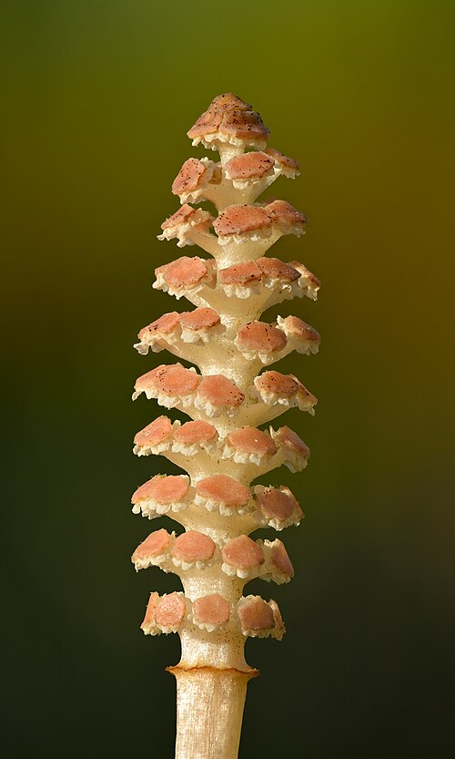
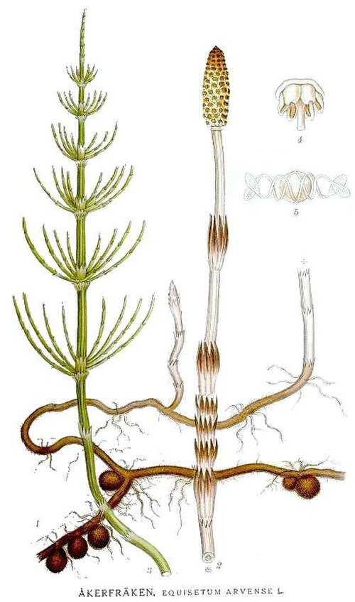

Skrzyp polny
Equisetum arvense · rodzina skrzypowate (Equisetaceae) · „koński ogon"



Występowanie
Cała Polska, gleby piaszczyste
Wysokość
10–40 cm
Zarodnikowanie
III – V (pędy beżowe)
Zbiór ziela
VI – VIII (pędy zielone)
Surowiec
Pędy zielone, lato
Klasa
Paprotnik (zarodnikowy)
Opis i występowanie
Bylina paprotnikowa (zarodnikowa, nie nasienna!) o dwóch typach pędów:
- Pędy zarodnikowe — wiosną (marzec-maj), bezzielone, beżoworóżowe, z kłosem zarodnionośnym na szczycie. Krótko żyją, nieleczne.
- Pędy płonne (zielone) — latem, zielone, rozgałęzione (przypominają choinkę lub koński ogon). To je się zbiera.
Łodyga członowana, w środku pusta, krzemowa w dotyku (szorstka — można nią szlifować!). Rośnie na glebach kwaśnych, piaszczystych, na polach, miedzach, nasypach kolejowych, brzegach rowów. Wskaźnik gleb kwaśnych, wilgotnych. Trudny do wytępienia chwast — kłącza sięgają 1-2 m w głąb.
Skład — krzem i jeszcze raz krzem
| Składnik | Działanie |
|---|---|
| Krzemionka (SiO₂) — do 7%! | Najbogatsze ziołowe źródło krzemu w przyrodzie |
| Flawonoidy (kwercetyna, kemferol) | Antyoksydacyjne, moczopędne |
| Saponiny (ekwizetonina) | Moczopędne |
| Kwasy organiczne (jabłkowy, szczawiowy) | — |
| Sole mineralne (potas, mangan, wapń) | Mineralizacja |
| Witamina C, karoten | Antyoksydanty |
| Alkaloid palustryna (śladowe ilości) | Toksyczna w dużych dawkach → krótkie kuracje! |
Na co pomaga
- Włosy, paznokcie, skóra — krzem buduje keratynę. Klasyk: 4 tyg. → mocniejsze paznokcie, gęstsze włosy.
- Kości, stawy — krzem niezbędny do wytwarzania kolagenu i wapnowania kości. Profilaktyka osteoporozy.
- Tkanka łączna — wzmocnienie ścięgien, naczyń krwionośnych (żylaki!).
- Drogi moczowe — silnie moczopędne, pomaga przy:
- zapaleniu pęcherza
- kamicy nerkowej
- obrzękach
- Krwawienia — wewnętrzne (z dróg moczowych, nosa), zewnętrzne.
- Trudno gojące się rany, owrzodzenia — okłady przyspieszają regenerację.
- Reumatyzm, gościec — wzmaga wydalanie toksyn.
- Łojotok, łupież — płukanki głowy.
Zbiór i suszenie
- Zbieraj tylko pędy zielone, letnie — od czerwca do sierpnia, najlepiej w upalne dni.
- Ścinaj nożem 5 cm nad ziemią.
- Susz w cieniu, w przewiewnym miejscu. Cienko rozłożone, max 40°C.
- Po wysuszeniu pokrusz, przechowuj w słoikach do 12 miesięcy.
⚠ Nie myl ze skrzypem błotnym (Equisetum palustre), który zawiera duże ilości toksycznej palustryny! Skrzyp polny rośnie głównie na polach (suchych), błotny — na bagnach i podmokłych łąkach. Skrzyp polny ma pierwsze odgałęzienia dłuższe niż średnica łodygi. Skrzyp błotny — krótsze.
Przepisy
🧪 Odwar (klucz — DŁUGIE gotowanie!)
- Łyżkę pokruszonego ziela zalej szklanką zimnej wody.
- Doprowadź do wrzenia i gotuj 20-30 minut pod przykryciem (krzem trudno przechodzi do wody — krótsze parzenie nie wystarczy!).
- Odstaw na 10 min, przecedź.
- Pij 2× dziennie po posiłku przez 2-4 tygodnie. Potem przerwa.
💡 Wlej zimną wodę na noc, rano dogotuj. To uwalnia jeszcze więcej krzemu.
💆 Płukanka do włosów (na łupież, łojotok)
- 3 łyżki suszu gotuj w 1 l wody przez 20 min.
- Odstaw, przecedź, ostudź.
- Po umyciu szamponem wmasuj w skórę głowy, nie spłukuj.
- Stosuj 2-3× tygodniowo. Włosy stają się mocniejsze, mniej tłuszczą się.
💅 Kąpiel dla paznokci
- Ugotuj 2 łyżki w pół litra wody (15 min).
- Przelej do miseczki, ostudź do ciepłej temperatury.
- Mocz palce 10-15 min, codziennie przez 2 tygodnie.
- Po kuracji paznokcie wyraźnie mocniejsze, mniej łamliwe.
🌱 Skrzyp w ogrodzie — fungicyd naturalny
- Skrzyp namocz w wodzie 24 h.
- Zagotuj, gotuj 30 min.
- Ostudź, przecedź. Rozcieńcz 1:5 z wodą.
- Opryskuj rośliny przeciwko mączniakowi, plamistościom, rdzy (krzem twardnieje skórki roślin).
✓ Zalety
- Niezrównane źródło krzemu — kluczowe dla włosów, paznokci, skóry
- Silnie moczopędne — bez wypłukiwania potasu
- Wzmacnia kości i tkanki łączne
- Można stosować zewnętrznie i wewnętrznie
- Powszechnie dostępny, gratis
- Świetny w ogrodzie jako fungicyd
✗ Wady i przeciwwskazania
- Kuracja max 4-6 tygodni, potem przerwa — palustryna jest lekko toksyczna
- Wymaga długiego gotowania (30 min!) — krótkie parzenie nie uwalnia krzemu
- Pomyłka ze skrzypem błotnym (trujący!)
- Niewydolność serca, nerek — ostrożnie z moczopędnym
- Ciąża i karmienie — nie zaleca się
- Może zaburzać wchłanianie wit. B1 (długo stosowany)
- Niedobór potasu — przy długim stosowaniu można uzupełnić
Ciekawostki
- Skrzyp to żywa skamieniałość — rośnie na Ziemi od 350 milionów lat (karbon). Wtedy osiągał wysokość 30 metrów!
- Z węgla kamiennego, który dziś palimy, znaczna część to skamieniałe lasy skrzypowe.
- Dawniej używany do polerowania cyny i drewna — krzemionka działa jak papier ścierny.
- Ludowa nazwa „koński ogon", „świńskie ogony", „kocia trawa".
- Niemiecki uzdrowiciel ks. Sebastian Kneipp rozsławił skrzyp w XIX wieku — jego okłady i kąpiele leczyły reumatyzm.